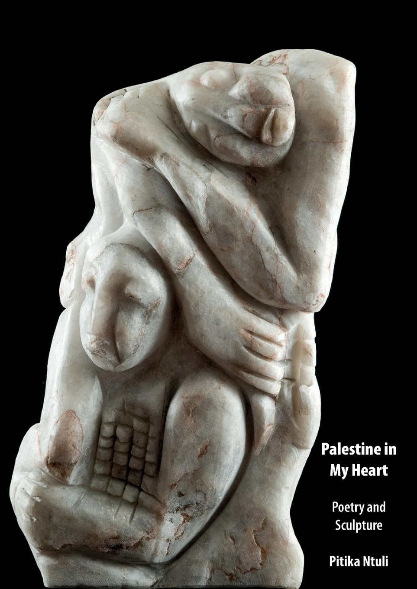

Palestine in My Heart: a new poetry collection by Pitika Ntuli
A new poetry collection from sculptor-poet Pitika Ntuli, blending lyrical empathy and satire in solidarity with Palestine — illustrated with his own sculptures. Published by Botsotso.
View the book